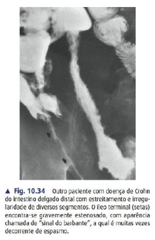

Quem é o Crohn
Inflamação transmural, descontínua (skip), granulomatosa, da boca ao ânus. Mais comum: ileocólica. Gene NOD2/CARD15. Tabaco piora.
Clínica
- Dor em FID (simula apendicite), diarreia crônica geralmente sem sangue, perda de peso.
- Doença perianal (fístula, abscesso) = doença agressiva.
- B12 ↓ e diarreia por sais biliares (íleo terminal).
Exames
- ↑Calprotectina fecal, ASCA+.
- Colono: cobblestone, úlceras salteadas, reto poupado.
- Histo: transmural + granuloma não caseoso.
- Entero-TC: cordão de Kantor, comb sign, creeping fat.

Fig. 10.34 — Entero-TC: íleo terminal estenosado e irregular — "sinal do barbante" (string sign), muitas vezes por espasmo associado à inflamação.
Crohn × RCU
Acometimento
Salteado, boca→ânus / RCU: contínuo do reto
Profundidade
Transmural / RCU: mucosa
Tabaco
Piora / RCU: "protege"
Sorologia
ASCA+ / RCU: p-ANCA+
Cirurgia
Não cura / RCU: cura
Prova HCPA·AMRIGSTríade: transmural + skip + granuloma não caseoso.
Tratamento & preparo
Clínico
- Indução ileocecal: budesonida (1ª linha).
- Manutenção: imunomodulador (AZA/MTX) + biológicos (anti-TNF, vedo, uste, risan, JAK).
- ATB só p/ perianal/abscesso. 5-ASA pouco eficaz.
Indicações cirúrgicas
- Obstrução/estenose = mais comum.
- Fístula, abscesso, perfuração, hemorragia, refratariedade.
- ~70–80% operam na vida. Cirurgia não cura.
Procedimentos
- Ressecção ileocecal (prototípica).
- Estenoplastia: HM <10cm · Finney 10–25 · Michelassi >25.
- Perianal: seton, evitar fistulotomia ampla.
Preparo
- Laparoscopia preferencial (via do LIR!C).
- Otimizar nutrição, desmamar corticoide, ATB profilático, profilaxia TVP, marcar estoma.
Prova Santa Casa·AMRIGSLIR!C: ressecção ileocecal lap = alternativa upfront ao infliximabe na ileíte limitada (≤40cm) inflamatória.
PenetranteDrena → nutre → desinflama → resseca. Nunca anastomose em abscesso ativo.
Ressecção ileocecal
1
Inventário: correr todo o delgado p/ mapear skip lesions.
2
Avaliar íleo+ceco doentes, calibrar estenoses.
3
Mobilizar cólon D pela linha branca de Toldt.
4
Proteger duodeno, ureter D, vasos gonadais.
5
Ligar a. ileocólica perto da alça (mesentério friável).
6
Margens em intestino macro normal (~2cm basta).
8
Anastomose: látero-lateral grampeada OU Kono-S.
9
Fechar brecha mesentérica, revisar.
10
Espécime out, conferir, fechar.
Prova HCPA R3Kono-S (SuPREMe-CD): antimesentérica, ↓recorrência endoscópica e ↓deiscência/reoperação.
Macetes
Os C do CrohnCobblestone · Creeping fat · Caseação ausente · Cigarro · Cuts (skip) · fisChula.
Regra de ouroResseca só o que vê, poupa o resto. Cirurgia não cura.
Íleo terminalRessecado → falta B12 + diarreia por sais biliares.
ImagemString sign (cordão de Kantor) = estenose ileal.
Pós-op nº1Cessar tabagismo > qualquer droga.
R3/vascularKono-S · excisão mesentérica (Coffey) · LIR!C 10 anos (upfront).